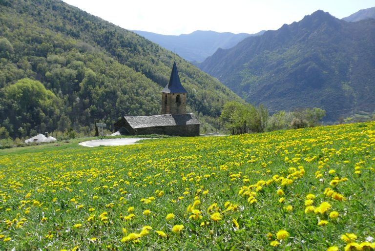
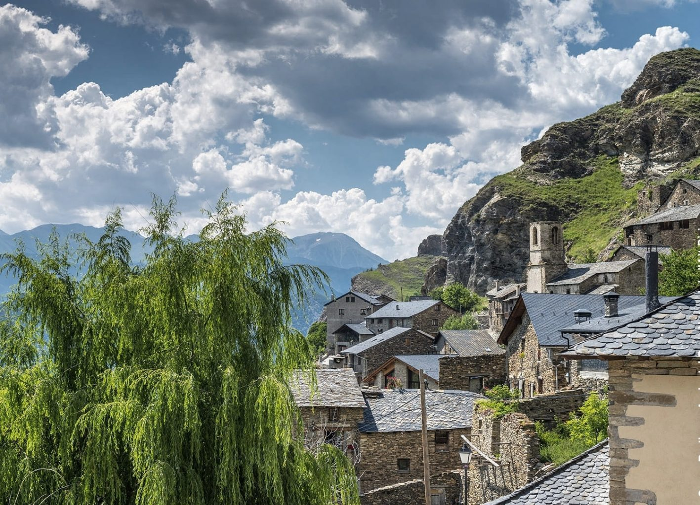

Llocs d'interès
-

Espot
El nucli antic d’Espot conserva algunes joies de l’arquitectura tradicional del Pallars. Els carrers estrets que serpentegen entre les cases de pedra us portaran a descobrir indrets amb encant. A l’altra banda del nucli antic, sobre el poble s’alça l’Església de Santa Llogaia, sempre adornada amb flors de colors vius, prop del pont medieval.
Per Lourdes Gómez — 31 de desembre de 2024
-

Esterri d’Àneu
La vitalitat d’Esterri d’Àneu i els colors de les flors que adornen els carrers fan d’aquest poble un dels més encantadors de la comarca. Els carrers estrets del nucli antic, les cases ben conservades, l’església de Sant Vicenç, el pont romànic que travessa la Noguera Pallaresa i el passeig pel riu donen a Esterri d’Àneu un encant especial.
Per Toni Escapa — 30 de desembre de 2024
-

Esterri de Cardós
Situat en un entorn natural esplèndid, Esterri de Cardós és un poble esquitxat de cases compactes i carrerons ombrívols que ha sabut conservar tot el caràcter rural i tradicional dels pobles de muntanya sense caure en la temptació d’aixecar noves construccions. La primavera i l’estiu són les millors estacions per apreciar tots els seus encants.
Per Sara Rodon — 28 de desembre de 2024
-

Gerri de la sal
Com el seu nom indica (en català, “sal” vol dir “sal”), Gerri de la Sal és un lloc que fa temps que viu a les seves salines. Un fet que va marcar clarament l’estructura del poble, com ho testimonien el monestir de Santa Maria, el pont romànic que travessa la Noguera Pallaresa, el magatzem de sal i el nucli antic molt ben conservat, d’una gran riquesa arquitectònica.
Per Elena Navarro — 20 de desembre de 2024
-

Burg
Les àmplies cases de Burg s’aixequen al vessant d’una vall verda que acull diferents tipus de paisatges, des de boscos fins a congostos, passant per prats i pastures… L’agulla afilada de l’església sobrevola les teulades de pissarra de les cases i domina el paisatge. Un passeig pels carrerons de Burg és un autèntic viatge en el temps.
Per Cecília Val — 15 de desembre de 2024
-

Àreu
Situat als peus de Monteixo, Àreu és un poble dividit en dos àmbits: el poble pròpiament dit, al sud, enmig d’una plana, que s’estén de nord a sud; i la Força d’Àreu, antic nucli emmurallat en forma de castell, més al nord, que dona nom al poble.
Per Ana Torres — 10 de desembre de 2024